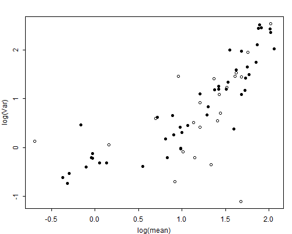

Let us consider the data on children ever born from Table 4.1. The unit of analysis here is the individual woman, the response is the number of children she has borne, and the predictors are the duration since her first marriage, the type of place where she resides, and her educational level, classified in four categories.
Data such as these have traditionally been analyzed using ordinary linear models with normal errors. You might think that since the response is a discrete count that typically takes values such as 0, 2 or six, it couldn’t possibly have a normal distribution. The key concern, however, is not the normality of the errors but rather the assumption of constant variance.
Figure 4.1 The Mean-variance Relationship for the CEB Data
In Figure 4.1 we explore the form of the mean-variance relationship for these data by plotting the variance versus the mean for all cells in the table with at least 20 observations. For convenience we use a log-log scale. Clearly, the assumption of constant variance is not valid. Although the variance is not exactly equal to the mean, it is not far from being proportional to it. Thus, we conclude that we can do far more justice to the data by fitting Poisson regression models than by clinging to ordinary linear models.
At this point you may wonder whether we need the individual observations to be able to proceed further. The answer is no; all the information we need is available in Table 4.1. To see this point let \( Y_{ijkl} \) denote the number of children borne by the \( l \)-th woman in the \( (i,j,k) \)-th group, where \( i \) denotes marital duration, \( j \) residence and \( k \) education, and let \( Y_{ijk} = \sum_l Y_{ijkl} \) denote the group total. If each of the observations in this group is a realization of an independent Poisson variate with mean \( \mu_{ijk} \), then the group total will be a realization of a Poisson variate with mean \( n_{ijk} \mu_{ijk} \), where \( n_{ijk} \) is the number of observations in the \( (i,j,k) \)-th cell.
Suppose now that you postulate a log-linear model for the individual means, say
\[ \log \mbox{E}(Y_{ijkl}) = \log(\mu_{ijk}) = \boldsymbol{x}_{ijk}'\boldsymbol{\beta}, \]where \( \boldsymbol{x}_{ijk} \) is a vector of covariates. Then the log of the expected value of the group total is
\[ \log \mbox{E}(Y_{ijk}) = \log(n_{ijk}\mu_{ijk}) = \log(n_{ijk}) + \boldsymbol{x}_{ijk}'\boldsymbol{\beta}. \]Thus, the group totals follow a log-linear model with exactly the same coefficients \( \boldsymbol{\beta} \) as the individual means, except for the fact that the linear predictor includes the term \( \log(n_{ijk}) \). This term, which is known beforehand, is called an offset, and is a frequent feature of log-linear models for counts of events. Often, when the response is a count of events the offset represents the log of some measure of exposure, in our case the number of women.
Thus, we can analyze the data by fitting log-linear models to the individual counts, or to the group totals. In the latter case we treat the log of the number of women in each cell as an offset. The parameter estimates and standard errors will be exactly the same. The deviances of course, will be different, because they measure goodness of fit to different sets of counts. Differences of deviances between nested models, however, are exactly the same whether one works with individual or grouped data. The situation is analogous to the case of individual and grouped binary data discussed in the previous chapter, with the offset playing a role similar to that of the binomial denominator.
Table 4.3 shows the results of fitting a variety of Poisson models to the children ever-born data. The null model has a deviance of 3732 on 69 degrees of freedom (d.f.) and does not fit the data, so we reject the hypothesis that the expected number of children is the same for all these groups.
Table 4.3. Deviances for Poisson Log-linear Models Fitted to
the Data on CEB by Marriage Duration, Residence and Education
| Model | Deviance | d.f. |
| Null | 3731.52 | 69 |
| One-factor Models | ||
| Duration | 165.84 | 64 |
| Residence | 3659.23 | 67 |
| Education | 2661.00 | 66 |
| Two-factor Models | ||
| \(D + R\) | 120.68 | 62 |
| \(D + E\) | 100.01 | 61 |
| \(D R\) | 108.84 | 52 |
| \(D E\) | 84.46 | 46 |
| Three-factor Models | ||
| \(D+R+E\) | 70.65 | 59 |
| \(D+RE\) | 59.89 | 53 |
| \(E+DR\) | 57.06 | 49 |
| \(R+DE\) | 54.91 | 44 |
| \(DR+RE\) | 44.27 | 43 |
| \(DE+RE\) | 44.60 | 38 |
| \(DR+DE\) | 42.72 | 34 |
| \(DR+DE+RE\) | 30.95 | 28 |
Introducing marital duration reduces the deviance to 165.8 on 64 d.f. The substantial reduction of 3566 at the expense of only five d.f. reflects the trivial fact that the (cumulative) number of children ever born to a woman depends on the total amount of time she has been exposed to childbearing, as measured by the duration since her first marriage. Clearly it would not make sense to consider any model that does not include this variable as a necessary control.
At this stage one could add to the model type of place of residence, education, or both. The additive model with effects of duration, residence and education has a deviance of 70.65 on 59 d.f. (an average of 1.2 per d.f.) and provides a reasonable description of the data. The associated P-value under the assumption of a Poisson distribution is 0.14, so the model passes the goodness-of-fit test. In the next subsection we consider the interpretation of parameter estimates for this model.
The deviances in Table 4.3 can be used to test the significance of gross and net effects as usual. To test the gross effect of education one could compare the one-factor model with education to the null model, obtaining a remarkable chi-squared statistic of 1071 on three d.f. In this example it really doesn’t make sense to exclude marital duration, which is an essential control for exposure time. A better test of the effect of education would therefore compare the additive model \( D+E \) with both duration and education to the one-factor model \( D \) with duration only. This gives a more reasonable chi-squared statistic of 65.8 on three d.f., still highly significant. Since educated women tend to be younger, the previous test overstated the educational differential.
We can also test the net effect of education controlling for type of place of residence, by comparing the three-factor additive model \( D+R+E \) with the two-factor model \( D+R \) with duration and residence only. The difference in deviances of 50.1 on three d.f. is highly significant. The fact that the chi-squared statistic for the net effect is somewhat smaller than the test controlling duration only indicates that part of the effect of education may be attributed to the fact that more educated women tend to live in Suva or in other urban areas.
The question of interactions remains to be raised. Does education make more of a difference in rural areas than in urban areas? To answer this question we move from the additive model to the model that adds an interaction between residence and education. The reduction in deviance is 10.8 on six d.f. and is not significant, with a P-value of 0.096. Does the effect of education increase with marital duration? Adding an education by duration interaction to the additive model reduces the deviance by 15.7 at the expense of 15 d.f., hardly a bargain. A similar remark applies to the residence by duration interaction. Thus, we conclude that the additive model is adequate for these data.
Table 4.4 shows parameter estimates and standard errors for the additive model of children ever born (CEB) by marital duration, type of place of residence and education.
Table 4.4. Estimates for Additive Log-Linear Model of
Children Ever Born
by Marital Duration, Type of Place of Residence and Educational Level
| Parameter | Estimate | Std. Error | z-ratio | |
| Constant | \(-0.1173\) | 0.0549 | \(-\)2.14 | |
| Duration | 0–4 | – | ||
| 5–9 | 0.9977 | 0.0528 | 18.91 | |
| 10–14 | 1.3705 | 0.0511 | 26.83 | |
| 15–19 | 1.6142 | 0.0512 | 31.52 | |
| 20–24 | 1.7855 | 0.0512 | 34.86 | |
| 25–29 | 1.9768 | 0.0500 | 39.50 | |
| Residence | Suva | – | ||
| Urban | 0.1123 | 0.0325 | 3.46 | |
| Rural | 0.1512 | 0.0283 | 5.34 | |
| Education | None | – | ||
| Lower | 0.0231 | 0.0227 | 1.02 | |
| Upper | -0.1017 | 0.0310 | -3.28 | |
| Sec\(+\) | -0.3096 | 0.0552 | -5.61 | |
The constant represents the log of the mean number of children for the reference cell, which in this case is Suvanese women with no education who have been married 0–4 years. Since \( \exp\{-0.1173\}=0.89 \), we see that on the average these women have 0.89 children at this time in their lives. The duration parameters trace the increase in CEB with duration for any residence-education group. As we move from duration 0–4 to 5–9 the log of the mean increases by almost one, which means that the number of CEB gets multiplied by \( \exp\{0.9977\} = 2.71 \). By duration 25–29, women in each category of residence and education have \( \exp\{1.977\} = 7.22 \) times as many children as they did at duration 0–4.
The effects of residence show that Suvanese women have the lowest fertility. At any given duration since first marriage, women living in other urban areas have 12% larger families (\( \exp\{0.1123\} = 1.12 \)) than Suvanese women with the same level of education. Similarly, at any fixed duration, women who live in rural areas have 16% more children (\( \exp\{0.1512\}=1.16 \)), than Suvanese women with the same level of education.
Finally, we see that higher education is associated with smaller family sizes net of duration and residence. At any given duration of marriage, women with upper primary education have 10% fewer kids, and women with secondary or higher education have 27% fewer kids, than women with no education who live in the same type of place of residence. (The last figure follows from the fact that \( 1-\exp\{-0.3096\}=0.27 \).)
In our discussion of interactions in the previous subsection we noted that the additive model fits reasonably well, so we have no evidence that the effect of a variable depends on the values of other predictors. It is important to note, however, that the model is additive in the log scale. In the original scale the model is multiplicative, and postulates relative effects which translate into different absolute effects depending on the values of the other predictors. To clarify this point we consider the effect of education. Women with secondary or higher education have 27% fewer kids than women with no education. Table 4.5 shows the predicted number of children at each duration of marriage for Suvanese women with secondary education and with no education, as well as the difference between these two groups.
Table 4.5. Fitted Values for Suvanese Women with No Education
and with Secondary or Higher Education
| Marital Duration | 0–4 | 5–9 | 10–14 | 15–19 | 20–24 | 25\(+\) |
| No Education | 0.89 | 2.41 | 3.50 | 4.47 | 5.30 | 6.42 |
| Secondary\(+\) | 0.65 | 1.77 | 2.57 | 3.28 | 3.89 | 4.71 |
| Difference | 0.24 | 0.64 | 0.93 | 1.19 | 1.41 | 1.71 |
The educational differential of 27% between these two groups translates into a quarter of a child at durations 0–4, increases to about one child around duration 15, and reaches almost one and a quarter children by duration 25\( + \). Thus, the (absolute) effect of education measured in the original scale increases with marital duration.
If we had used an ordinary linear regression model for these data we would have ended up with a large number of interaction effects to accommodate the fact that residence and educational differentials increase with marital duration. In addition, we would have faced a substantial problem of heteroscedasticity. Taking logs of the response would ameliorate the problem, but would have required special treatment of women with no children. The Poisson log-linear model solves the two problems separately, allowing the variance to depend on the mean, and modeling the log of the mean as a linear function of the covariates.